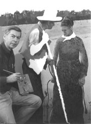

|
A native of Illinois, I began oil painting in 1953. My
father was an artist and trained me. Oil painting became
an enjoyment quite different from my scientific career.
I paint a broad spectrum of subjects in a painterly
style. Depending upon the subject, I add realism, surrealism
or impressionism in combinations to achieve my visual goal.
My paintings now reside with owners in the U.S. and several
foreign countries.
In 1996
I began showing my work in public after completing
three very large canvases. When I stand before a large,
blank canvas to begin a new work or to continue one
underway, I receive a special thrill from the self-imposed
risks created within a large painting. Making an idea take form and capturing it in color is
a satisfying act of creation.
People often ask where I get my ideas. My works of fine art
are inspired by books I have read, travel experiences, word
thoughts, and images seen or imagined and refined over time.
Creative communication is my artistic goal. For some
paintings, I write a short narrative to add to the viewer's
enjoyment to provide further insight into the painting.
I give tribute to my father, William A. Ziebell (1910-1978),
by showing some of his work in the Mentor's Gallery. When I
started to oil paint, it rekindled his painting activity.
His works show a marked "before and after" style change,
with more sunlight in his later paintings.
You can contact me at:
Phone: ( 847 ) 381-5960
Mail: 910 C Oak Hill Road
Barrington, IL 60010
Email: yurart@comcast.net
"A
painter's life is never long enough. You leave your work
in the
middle."
Matisse |
Galleries | Meet the Artist | Art
Awards |
Contact | Large Art Gallery
|
New Gallery
Plains Gallery
| West Gallery
|
East Gallery
|
Bible Text Art
|
Homemaker Art
|
Mentor's Art
Copyright © 2006 Yur Art. All
rights reserved. |